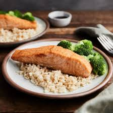

Salmon and Rice

Salmon and Rice is a nutritious and flavorful dish that combines the rich, tender taste of salmon with the soft, starchy texture of rice. Salmon can be prepared in various ways, such as grilled, baked, pan-seared, or
steamed, and is often seasoned with herbs, garlic, lemon, or soy sauce to enhance its natural flavors. Rice serves as a perfect base, absorbing the seasonings and sauces used in the dish. This combination is not only delicious but also highly
nutritious, as salmon is packed with omega-3 fatty acids, protein, and essential vitamins, while rice provides carbohydrates for energy. Whether served with simple steamed rice or enhanced with vegetables, spices, or sauces, salmon and rice
remains a satisfying and versatile meal enjoyed worldwide.
origins of salmon and rice can be traced to different culinary traditions across the globe. In Japan, it is a staple in dishes like salmon donburi (salmon rice bowl) and onigiri (rice balls filled with salmon). Indigenous peoples of the
Pacific Northwest have long valued salmon as a primary food source, often pairing it with wild rice. Scandinavian cuisine also features cured or smoked salmon served alongside grain-based dishes. In many Western countries, salmon and rice have
become a popular meal choice due to their health benefits and ease of preparation. The combination of salmon and rice continues to evolve, influenced by diverse cultures and cooking techniques, making it a timeless and widely loved dish.
Ingredients
For the salmon:
- 2 salmon fillets (about 6 oz each)
- 1 tablespoon olive oil or butter
- 1 teaspoon salt (or to taste)
- ½ teaspoon black pepper
- ½ teaspoon black pepper
- 1 teaspoon paprika (for color and flavor)
- 1 tablespoon soy sauce or lemon juice (for extra flavor)
- 1 teaspoon honey or brown sugar (optional, for a slight sweetness)
For the rice:
- 1 cup white or brown rice
- 2 cups water or chicken broth (for extra flavor)
- ½ teaspoon salt
- 1 teaspoon butter or olive oil
- 1 tablespoon of teriyaki
- ½ avocado, sliced (for a creamy addition)
Instructions
Step 1: Cook the rice
- Rinse the rice under cold water until the water runs clear to remove excess starch.
- In a medium saucepan, bring 2 cups of water (or chicken broth) to a boil.
- Add the rice, salt, and butter/olive oil, then reduce the heat to low.
- Cover and simmer for 15 minutes (white rice) or 35-40 minutes (brown rice) until the liquid is absorbed.
- Remove from heat and let it sit, covered, for 5 minutes before fluffing with a fork.
Step 2:Prepare and Cook the Salmon
- Pat the salmon fillets dry with a paper towel.
- In a small bowl, mix salt, black pepper, garlic powder, and paprika.
- Rub the salmon with olive oil or butter, then season both sides with the spice mix.
- Heat a skillet or pan over medium-high heat and add a little oil.
- Place the salmon skin-side down and cook for 4-5 minutes until crispy.
- Flip and cook for another 3-4 minutes until the salmon is fully cooked and flakes easily with a fork.
- Drizzle soy sauce or lemon juice over the salmon in the last minute of cooking.
Step 3: Assemble the Dish
- Divide the cooked rice onto two plates or bowls.
- Place a salmon fillet on top of the rice.
- Slice the avocado and arrange it next to the salmon.
- Drizzle 1 tablespoon of teriyaki sauce over the salmon and rice.
- Sprinkle with chopped parsley or green onions and optional sesame seeds for extra flavor.
Step 4: Serve and Enjoy
- Serve warm and enjoy your delicious salmon and rice with avocado and teriyaki sauce!
- Pair with a side salad or steamed vegetables for a balanced meal.
Home